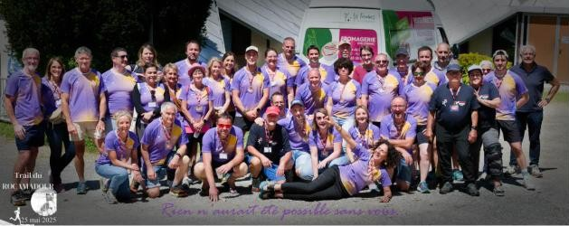
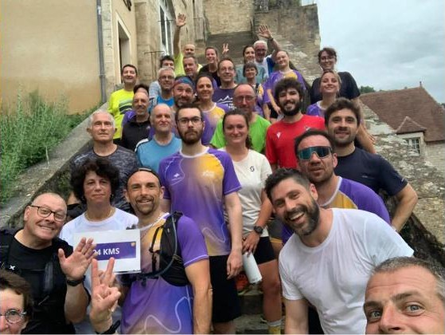

Dimanche 30 mai 2027, 3e édition. Quatre trails et une marche au pied de la falaise.
Routes et chemins forestiers. Le bon format pour découvrir le trail. La marche de 13 km part à la même heure.
Prendre ce dossard 24,5kmPlace à la technique : beaucoup de singles et des passages où il faut regarder ses pieds.
Prendre ce dossard 33,5kmRoulant et agréable. La distance pour se lancer un vrai défi sans partir sur l'ultra.
Prendre ce dossard 56kmLe grand format. Des montées franches et beaucoup de relances, pour les traileurs aguerris.
Prendre ce dossardLe prix du dossard selon la distance, hors commission de la plateforme d'inscription.
Sur tous les parcours : eau, fruits, barres de céréales et produits énergétiques.
Avec la liste des inscrits et la bourse aux échanges, sur la page Chronostart de la course.

La course tient grâce à ses bénévoles. Il y a de la place pour tout le monde, au ravito, au balisage ou sur la ligne d'arrivée.
Devenir bénévole
Démonstration EventLyx : réponses tirées des informations de cette page. Autre question : alvitrail46@gmail.com